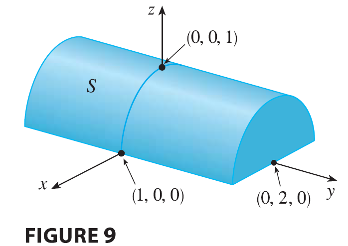

SOLUTION It would be very difficult to evaluate this
integral directly from Definition 5 but, because \(\sqrt{1 - x^2} \ge 0\), we can compute the
integral by interpreting it as a volume. If \(z = \sqrt{1 - x^2}\), then \(x^2 + z^2 = 1\) and \(z \ge 0\), so the given double integral
represents the volume of the solid \(S\) that lies below the circular cylinder
\(x^2 + z^2 = 1\) and above the
rectangle \(R\). The volume of \(S\) is the area of a semicircle with radius
1 times the length of the cylinder. Thus \[
\iint_R \sqrt{1 - x^2} dA = \frac{1}{2}\pi(1)^2 \times 4 = 2\pi
\]